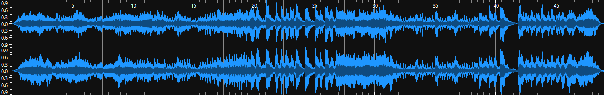
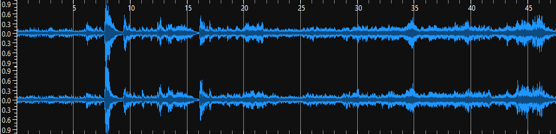
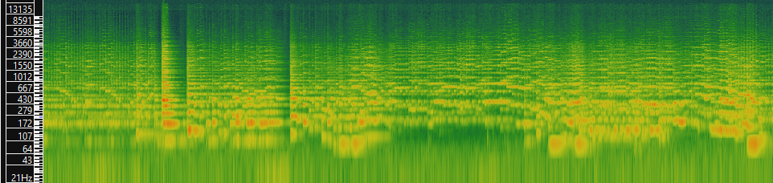
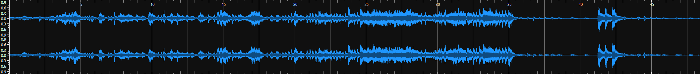
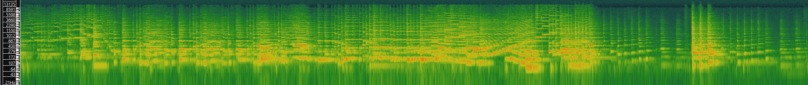

Music as Sound
Week 8
Finding Audio
Identify and download 3 music tracks relating to your theme. Ideally, these should be different in their sound and style.
Below are three performances of the first movement of Beethoven's String Quartet No. 4.
Track 1 - Dover Quartet:
Track 2 - Emerson Quartet:
Track 3 - Menuhin Competition:
Describing Audio
Identify and list (in a table) the most important technical and non-technical metadata associated with each track.
| Track 1 | Track 2 | Track 3 | |
|---|---|---|---|
| Title | Beethoven String Quartet Op. 18 No. 4, Mvt. 1 | Beethoven: String Quartet No. 4 in C Minor, Op. 18 No. 4 - 1. Allegro ma non tanto | L. v. Beethoven: String Quartet No. 4, 1st movement |
| Artist(s) | Dover Quartet | Emerson Quartet | Sumina Studer (Violin), Clara Chartré (Violin), Caroline (Viola), Clément Dami (Cello) |
| Composer | Ludwig van Beethoven | Ludwig van Beethoven | Ludwig van Beethoven |
| Copyright Info. | © Dover Quartet 2017 | ℗ 1997 Deutsche Grammophon GmbH, Berlin | None Specified |
| Genre | Classical | Classical | Classical |
| Source | https://www.youtube.com/watch?v=vn3OdaQtSNY | https://www.youtube.com/watch?v=xT56FWW34_U | https://www.youtube.com/watch?v=IoP_sTj7pFY |
| Audio Format | MP3 | Ogg Vorbis | WAV |
| Audio Channels | 2 (Stereo) | 2 (Stereo) | 2 (Stereo) |
| Sample Rate | 44.1kHz | 48kHz | 48kHz |
| Bitrate | 320kbps | 1536kbps | 1536kbps |
| Duration | 7:15 | 8:11 | 6:29 |
Performing Audio Analysis
For each downloaded track, generate a spectrogram (with log-spaced frequency scale) in SonicVisualizer. Export the waveform and spectrogram in an image format for your GitHub portfolio.
Dover Waveform:
Dover Spectrogram:

Emerson Waveform:
Emerson Spectrogram:
Menuhin Waveform:
Menuhin Spectrogram:
Comparing Analysis Methods
In 200 words (max), describe at least one advantage of a time-frequency analysis over a waveform-based analysis. Provide at least one example of the identified advantage by referencing a specific subpart of the output from step 1.
TODO: That.